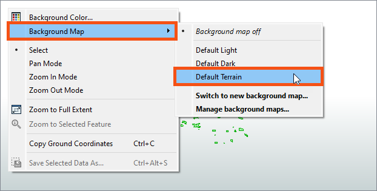

After completing this lesson, you’ll be able to:
Continuing with his workspace, Sven clicks View Written Data on the PublicArt writer feature type to open the geodatabase in Visual Preview.
Sven can view the data now but is displayed without much context. He wants to get a general sense of where most art installations are located. He knows from experience that viewing his data with a background map can help with this task. In general, Sven likes to add a background map to spatial data when he wants to:
To use a background map, your dataset must have a known coordinate system either stored in the data itself or explicitly specified. If your data doesn’t look as you expect when you add a background map, chances are you have a coordinate system problem.
If you are taking a Safe Software-hosted training course, FME Workbench may already have a background map configured. You can still follow along to learn how to do it.
⭐ New in FME 2023.1.1.1: we have three new free default background maps from Stadia Maps.
Stamen is shutting down its free offering of the raster tiles used for background maps and moving its service to Stadia. Safe Software often suggested Stamen maps in most of our training courses and knowledge base articles as it was a free option that did not require an API key to use a background map while viewing data. We now suggest upgrading to FME 2023.1.1.1 to use the new free Stadia maps. If that is not possible, you must use your own data (see below) or an alternative background map service that requires an API key from the provider.
Some instructions on the FME Academy still mention Stamen maps. You can replace those steps with the new default maps. The result will be similar.
To add a background map to Visual Preview, Sven right-clicks on the Graphics View pane and selects Background Map > Default Terrain.

Sven selects Default Terrain because it does not require an account.
There are many background map services available under Switch to new background map... if you prefer to use a different service.
The background map appears in the Graphics View. Sven can quickly tell that most art installations appear in the Downtown neighborhood, the central and northern areas displayed below.

Map tiles © Stadia Maps, © OpenMapTiles, © OpenStreetMap contributors, © Stamen Design
We find that new FME users sometimes have trouble keeping track of all the windows within Workbench. You might want to review Workbench's window management. If you ever lose a window, consider using View > Windows > Restore Default Layout.
In the FME Workbench menu bar, use Tools > FME Options > Background Maps (or FME Workbench > Preferences > Background Maps on a Mac) to swap to a different background map using the Default Dark instead of Default Terrain layer.
Next, try using the View Source Data button on the Mount Pleasant reader feature type and take note of the number of features it contains.